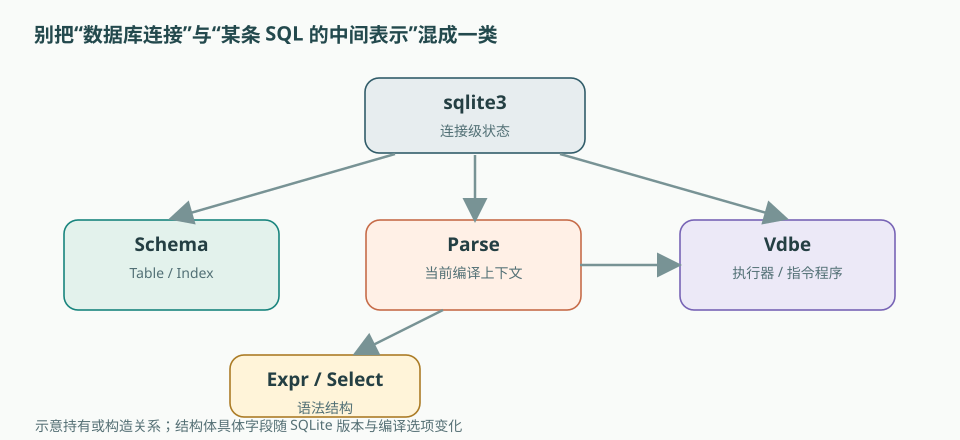
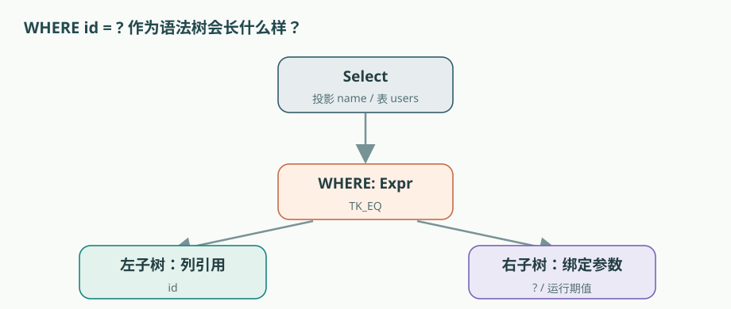

SQLite 的核心对象：连接、语法树与虚拟机
理解 SQLite 内部结构最容易犯的错误，是把连接对象、一次 SQL 的编译上下文、Schema 元数据和运行态混为一谈。
1. 为什么不能只按 C 结构体大小背源码？
同样名为“对象”，它们的作用域与生命周期完全不同。sqlite3 表示一个数据库连接；Parse 主要服务当前 SQL 编译；Table 和 Index 提供已解析的 schema 信息；Expr 和 Select 表达语法或查询逻辑；Vdbe 对应可以被执行的指令程序。

例如，编译 SELECT name FROM users; 需要临时构造语法与语义表示；编译结束后，执行器主要消费生成的字节码，而不是持续拿原始 SQL 字符串做全量解析。阅读源码时先问“这个对象在哪个阶段活着？”，再问“这个字段在哪里？”。
2. sqlite3：连接级状态为什么不只是一个文件句柄
一个连接可以承载事务状态、设置、错误状态、附加数据库、内存分配配置与 Schema 缓存等信息。sqlite3_open() 创建连接句柄；sqlite3_close() 或 sqlite3_close_v2() 结束连接生命周期。不能把 sqlite3* 想象成一个可直接操作的操作系统文件描述符。
对外的 sqlite3 类型是故意不透明的。扩展或应用程序应优先使用公开的 C API，而不是读取某个版本的 struct sqlite3 字段。源码研究可以观察 sqliteInt.h 中的实现，但字段顺序、内部类型和宏控制的条件成员不是稳定 ABI。
Table / Index 与数据库文件中的记录
Table 和 Index 主要表现 schema 语义元数据；它们不等于真正存放记录的磁盘页。连接通过读取 schema 构建相关内部结构，运行时再用 B-Tree 打开对应游标。区分这两者，才能明白为什么 CREATE TABLE 会影响 schema，INSERT 则涉及实际数据页。
3. Parse、Expr、Select：编译时发生了什么
以 SELECT name FROM users WHERE id = ? 为例，SQL 首先被 token 化与解析；编译器随后需要解析表名 users、列名 name 与 id，检查表达式合法性，识别绑定参数，再把条件、投影和访问路径转成字节码。

| 概念 | 教学意义 | 误区 |
|---|---|---|
Parse | 汇集本次编译的状态和上下文 | 认为它是跨连接共享的全局语法树 |
Expr | 表达运算及子表达式关系 | 认为每个操作符都有不变的固定字段布局 |
Select | 表达查询核心结构，便于后续分析 | 认为查询规划只需要一次线性语法遍历 |
Table / Index | 表达 schema 层面的表和索引 | 等同于数据库文件上的 B-Tree 节点 |
读取 sqliteInt.h、expr.c、select.c 时，关注“它在什么函数中创建、谁释放、谁消费”，不要脱离编译流程单独背出一个字段列表。
4. Vdbe / Op：编译结构如何变成可运行状态
代码生成会发出 opcode 和操作数，VDBE 执行时维护自己的程序计数器、寄存器与游标等运行时资源。查询表达式树用于选择生成什么指令；真正执行 SQL 时，字节码才是运行的核心。
一个良好的追踪练习是选择 EXPLAIN SELECT 1 + 2;：从输出中寻找常量加载、计算与返回结果这三个动作，再去当前版本的 vdbe.c 查找相应 opcode 分支。注意指令名与编号在不同 SQLite 版本可能不同。
sqlite3 :memory: <<'SQL'
EXPLAIN SELECT 1+2 AS result;
SELECT 1+2 AS result;
EXPLAIN QUERY PLAN SELECT 1+2 AS result;
SQL这组命令把计算结果、可选的高层查询计划和低层字节码分离开。在这个例子中，SELECT 1+2 没有用户表，也就不能证明有关磁盘 B-Tree 的任何性能性质。
5. 内部结构的正确阅读姿势
按“生命周期”做一张自己的追踪表
- 在固定源码检出中定位
struct sqlite3、struct Parse、struct Expr与struct Vdbe。 - 每种对象写下一个创建点和一个消费点，尽量用函数名标记，而不是只抄字段。
- 为
SELECT ?1;记录“编译时知道占位符存在，执行时才绑定其值”的区别。 - 检查语句完成后释放了什么，连接关闭时又释放了什么。
小测验：哪个对象能跨越多次 SQL 执行？
sqlite3 代表连接状态，可以在多条语句之间存在；Parse 则用于一次语句的编译过程。Vdbe 所代表的准备语句也可在应用保留句柄期间多次运行，但它与连接生命周期不是同一层次。
下一章沿生命周期进一步讨论内存：连接级临时对象、通用内存分配以及数据库页面如何共存。
来源与延伸阅读
根据以下原始资料复核主路径与接口；图形为解释用简化模型，具体结构体字段、字节码和版本行为必须以所读源码检出为准。
- SQLite C API · SQLite 官方原始资料
- Architecture of SQLite · SQLite 官方原始资料
- SELECT syntax · SQLite 官方原始资料
- SQLITE prepare interface · SQLite 官方原始资料